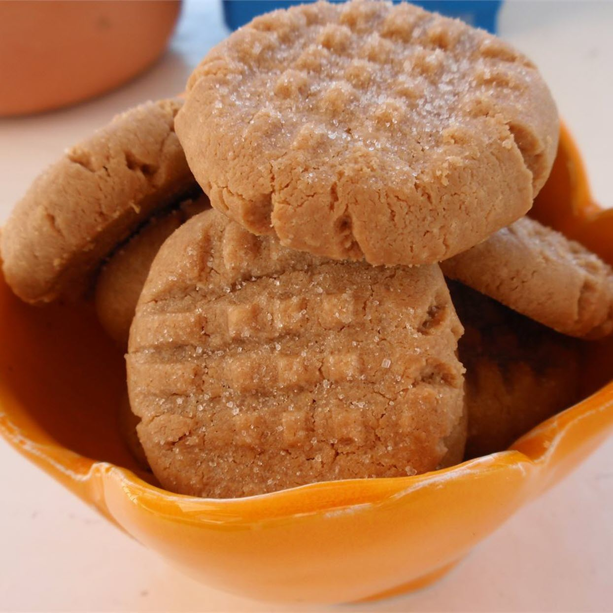

Peanut Butter Cookies

Time Info
- prep: 30 mins
- cook: 10 mins
- Dough Chilling: 3hrs
- total: 3 hr 40 mins
- Servings: 6
Description
These are the best peanut butter cookies ever! Use your favorite name-brand peanut butter and a combination of white and brown sugar for a chewy, sweet treat.
Ingredients
- 1 cup peanut butter
- 1 cup white sugar
- 1 egg
Steps
- Combine the peanut butter, white sugar and egg. Mix until smooth. Wrap dough in plastic and refrigerate at least 3 hours.
- Preheat oven to 350 degrees F (175 degrees C). Line baking sheets with parchment paper.
- Drop spoonfuls of dough onto the prepared baking sheet. Bake at 350 degrees F (175 degrees C) for 6 to 8 minutes. Do not overbake! These cookies are best when they are still soft and just barely brown on the bottoms.
Return to Top
‹ Return to main page